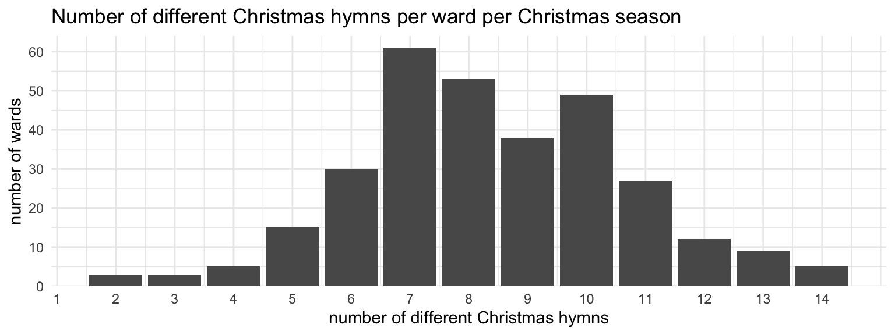
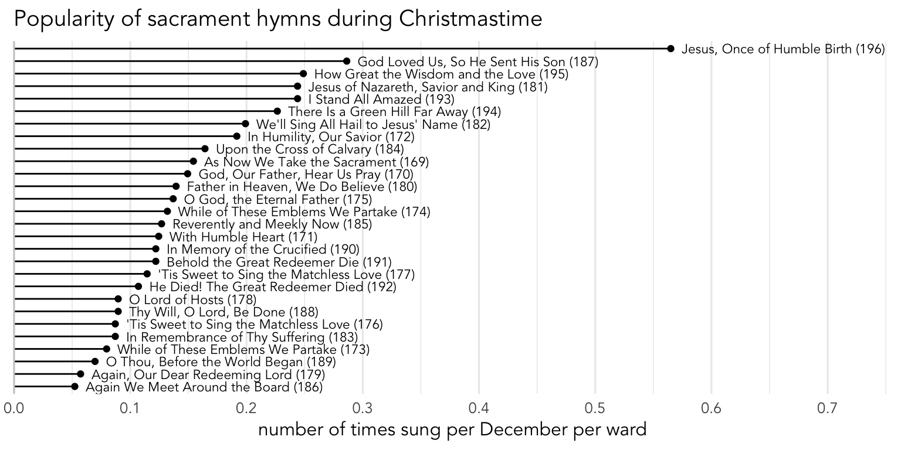
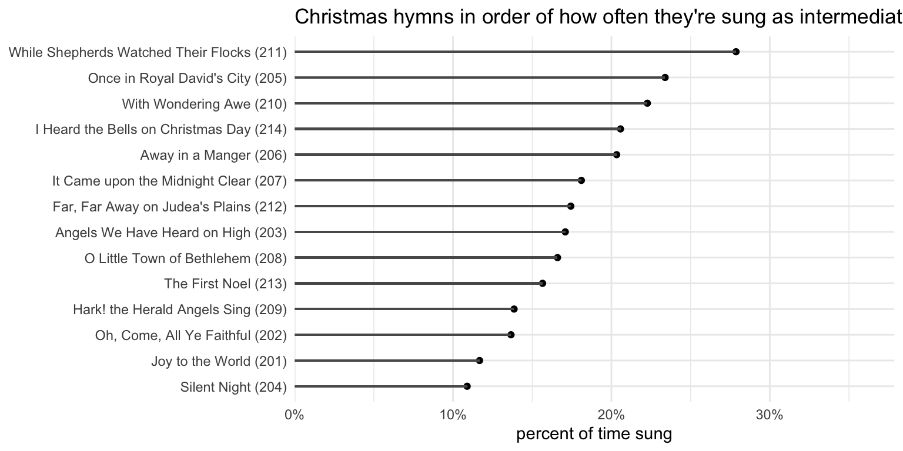

Christmas
holidays
In Latter-day Saint congregations, Christmas is the holiday that gets sung about the most. In this post, we’ll explore some of the patterns that arise in the hymns that we sing in December.
Note
In other Christian traditions, the term Advent is used to describe the four or so weeks leading up to Christmas, with the “Christmas season” being used to describe a period of twelve days starting with Christmas. For whatever reason, most members of the church don’t use the term Advent and any traditionally Advent and Christmas hymns are pooled together under a generic label of “Christmas.”
In this post, I’ll largely ignore the difference between Advent and Christmas in my terminology. But, since this post does focus on the four or so Sundays leading up to Christmas (the Sunday after Christmas is treated in a separate blog post here), those of you who maintain the difference can think of this post as being focused on Advent.
A look at the table of contents in the hymnal shows that the Christmas hymns are hymns 201–214. But the music coordinator faces the difficult task of figuring out which hymns to sing. There are usually not quite enough Sundays in December to sing all of them, so some will have to be prioritized over others. There are also usually a couple special musical numbers to work around, and I think many music coordinators try not to have the congregation sing a hymn if it’s already going to be heard in a musical number that season. So, with that in mind, let’s look at the data.
Note
I meant to get this post out earlier in December, but life got in the way. So, sorry it’s too late to incorporate these results into your ward’s Christmas meetings. Maybe next year you can consider what is presented here and make some changes, assuming the hymnbook isn’t drastically altered by then. I suspect we might get a few more Christmas hymns by next year, like “What Child is This”, “O Come, O Come, Emmanuel”, and “O Holy Night.”
How many Christmas hymns per season
It’s not likely that all 14 Christmas hymns will be sung by the congregation in any one ward within a year. There are, at most, six Sundays to work with in the Christmas season (click below to see details).
CautionTechnical details for calendar nerds :)
It’s a little tricky defining the Christmas season, so I put together a quick spreadsheet to visualize the seven different possible Christmas seasons. You can view it here or download it yourself here.
Traditionally, Advent starts the fourth Sunday before Christmas, which would be November 27th at the earliest and December 3rd at the latest. However, because we don’t traditionally celebrate Advent like other Christian denominations, people have different ideas for when Christmas hymns can be sung. For some, it’s the Sunday after Thanksgiving (in the United States). For others, it’s the first Sunday in December.
Only if Thanksgiving is at late as it can be, November 28th, do those three align and everyone can agree that the following Sunday, December 1st, is when Christmas hymns can be sung. If Thanksgiving is early, either the 22nd or the 23rd, then the Sunday after Thanksgiving will be the 25th or 26th, which is five Sundays before Christmas, and not technically Advent. So if Christmas hymns are sung then, Advent- and December-sticklers will say it’s too early; a week later will be December 2nd and 3rd and post-Thanksgiving sticklers will say it’s too late. If Thanksgiving falls between the 24th and the 27th, then the Sunday after will be the start of Advent but still in November. So if Christmas hymns are sung then, it’ll make the Advent and post-Thanksgiving people happy, but the December-sticklers will feel it’s too early.
The end of Christmas also has three possible dates. Some feel that the Christmas season ends on December 25th, so singing anything after Christmas Day is extending it too far. Others are fine going through December. Traditionally though, the Twelve Days of Christmas (or “Twelvetide”) starts on December 25th, meaning the last day of Christmas is January 5th. Here, you can’t satisfy all three groups. If Christmas is on a Monday or Tuesday, then there’s only one Sunday during Twelvetide and it’ll be December 30th or 31st. If Christmas is on a Sunday, you get one more Sunday during Twelvetide, and that’ll be on New Year’s Day. If Christmas is on a Wednesday through Saturday, there will be one Sunday after Christmas in December and another Sunday in January still part of Twelvetide.
Because of the way the calendars line up, there will always be exactly six Sundays between Thanksgiving and the end of Twelvetide. The years where Christmas is on a Monday or Tuesday are also the years that Thanksgiving is on the 22nd or 23rd (the earliest it can be), and you get four Sundays in December before Christmas, one extra Sunday after Thanksgiving before Advent technically starts and one Sunday at the end of December within Twelvetide. In all other cases, the Sunday after Thanksgiving is also the start of Advent and you get four Sundays before Christmas, and two during Twelvetide (one in December and one in January).
So, if the congregation sings the opening, intermediate, and closing hymn each week, that’s twelve slots to fill. And if the ward sings two more the Sunday after Christmas, then they can finally get all 14 hymns. So unless there’s some sort of special program that involves lots of congregational singing, it takes a minimum of five Sundays to get through all 14 Christmas hymns. Even if you extend into the first week of January, there are only six Sundays to work with and 18 slots to choose from. And since most wards probably have at least a couple special musical numbers, that cuts into the slots for congregational singing.
So, how many Christmas hymns does the congregation sing per Christmas season? Here, I’ll just focus on the wards that contributed an entire Christmas season’s worth of hymns. Specifically, they contributed at least five Sundays of hymns between November 27th and January 5th. Some wards contributed more than one Christmas season’s worth of hymns, and that’s fine. In total, I currently have 308 ward-years’ worth of Christmas hymns.
Figure 1 shows how many different Christmas hymns the congregation sings in a single Christmas season. The average is just eight, with most wards falling somewhere between five and eleven. Five wards did manage to sing all 14 Christmas hymns in a single season. For three of those though, it was aided by multiple intermediate hymns the Sunday before Christmas, presumably as part of a special Christmas program. But, that also means that for two of the wards, they managed to get through all 14 hymns the “normal” way. But just two out of 308 is 0.6% of wards. So, not very likely to happen in your ward. And yes, there were three wards that sang just two Christmas hymns in the entire season (probably to the chagrin of their ward members)!
Popularity of Christmas hymns
Music coordinators have the tricky task of trying to balance competing forces like Thanksgiving hymns, Fast Sunday, and New Year’s Hymns. In fact, in my ward growing up, we always sang
The “Beloved” Christmas hymns
The way I see it, we’ve got roughly three “tiers” of Christmas hymns. The top six or so are what I’d call the most “beloved” ones:
The most common is
CautionAdditional detail on repeating hymns
Figure 3 shows how many wards repeat each of the Christmas hymn per year. As you can see,

As far as I can tell, there’s actually nothing special about
It’s not clear to me why
The “Filler” Christmas hymns
Going back to Figure 2, if we look past the top six or so Christmas hymns, we get to what appears to be a second tier of popularity. This tier includes
The “No Other Choice” Christmas hymns
Finally, we get to the last tier of Christmas hymns, which includes just two:
Sacrament hymns
Even though it’s December, we still have to take the sacrament, and almost all wards are still going to choose a sacrament hymn to sing. Which ones are most common in December?
I’ve written about sacrament hymns already and there I showed that

The second that appears to stand out is
Non-Christmas hymns in December
It’s true that Decembers are completely dominated by Christmas hymns. Of the 6137 hymns in my database that were sung in December, 58.9% of them were Christmas hymns. Sacrament hymns are another 29.7%, which makes sense since one in every three to four hymns is most likely going to be a sacrament hymn. New Year’s and Thanksgiving hymns make up a small chunk of the data. But, the rest then—8.2% of the hymns in December—are other miscellaneous hymns. That means about one, maybe two, hymns in all of December won’t be holiday- or sacrament-themed.
Looking at those 8.2% of hymns that are sung in December but aren’t otherwise accounted for, I don’t really see any patterns. Figure 5 shows these most common hymns and all I see are hymns that are just popular at any time of the year. The most common is
Interestingly, my ward did a Christmas testimony Sunday this year, where people got up and talked about their favorite Christmas hymn and then we sang one verse of it as a congregation. The only non-Christmas hymn that was selected was I Believe in Christ (#134) and it was by a primary-aged boy.
I’m trying to think of reasons for singing a non-holiday hymn in December. I suppose a missionary farewell or homecoming might mean the ward sings a missionary work–related hymn. In my homeward, we sang
I’ll soon post an analysis of the last Sunday in December.
It should be noted though that not all weeks in December are treated equally. Figure 6 breaks the data down into the first, second, third, fourth, and (if applicable) fifth Sundays of December, with the hymns grouped by category (Sacrament, Thanksgiving, Christmas, New Year’s, and “other”).

There’s a lot of interesting things to say based on this plot.
First, we see the the proportion of sacrament hymns is pretty constant at around 30% of the data, with a little more on the first Sunday of the month since that’s usually Fast and Testimony meeting and there is typically not an intermediate hymn.
The traditional Thanksgiving hymns (i.e. hymns 91–95) are pretty much non-existent in December and the only reason we see some “Thanksgiving” category on the fifth Sunday of December is because it’s
Count Your Blessings (#241) andBecause I Have Been Given Much (#219) . They’re hymns that are generally common but peak during Thanksgiving so I count them as Thanksgiving hymns.The proportion of Christmas hymns hit their greatest concentration during the second and third weeks of December, accounting for about 65% of the hymns sung during those weeks. These are peak Christmas weeks and it would be rather unusual to sing anything else.
The New Year’s hymns are quite common on the last week of the month, especially if it’s a fifth Sunday. Given that there are only two hymns in that category (#215 and #217), it’s impressive they make up such a large proportion of the data.
Finally, all the other hymns. There is a clear U-shaped pattern, where singing non-holiday hymns is gets less and less common as you approach Christmas. But during the last Sunday of the month, especially if it’s a fifth Sunday, the proportion of “other” hymns goes up quite a bit.
So, even though just 8.2% of the hymns sung in December are non-holiday hymns, that is mostly found in the last week of the month.
Christmas hymns outside of December
What about the opposite question: are Christmas hymns ever sung outside of December? We’ll exclude the last week of Noveber because many wards start singing them then. We’ll also exclude the first Sunday of January since we occasionally get some then too. Once we do that, Christmas hymns are extremely uncommon. They only happened 41 times out of the 57,153 hymns outside of the Christmas season, or just 0.072% of the time. The majority of them are in mid-November and a few are as late as mid-January. As far as the rest, I have no explanation whatsoever.
Trends within December
Up above, we saw that not all Sundays in December are equal and that we are most likely to sing Christmas hymns during the second and third Sundays of the month. Previously, when looking at the Sunday after Thanksgiving, I showed that if Thanksgiving is late in the month and the Sunday after Thanksgiving is December 1st, tons of wards sing Christmas hymns than any other Sunday after Thanksgiving. More specifically, the two that entirely drove that trend were
Figure 7 shows how popular each Christmas hymn is by date, going from the fourth Sunday before Christmas to the first Sunday on or after Christmas. The numbers in for each hymn add up to 100%, so for example, out of all the times that
There is a lot to unpack here, so let’s look at what’s going on. First, we see that few hymns peak the Sunday before Christmas, meaning they’re most commonly sung then.
The most number of hymns appear to peak two Sundays before Christmas, sometime between December 11th and December 17th. These include
Two hymns peak the third Sunday before Christmas, or rather, between December 4th and 10th. They are
Finally, we have
Overall, while the pattern is not perfect, there appears to be a trend of singing the most popular Christmas hymns closer to Christmas. It’s not clear to me whether they were popular first, so they get sung then, or if they’re sung then and that’s what made them popular.
CautionAnother look at the data
Another way of looking at this data is to basically change it so that instead of the numbers for each hymn adding up to 100%, the numbers within each week at up to 100%. Figure 8 shows that. It’s largely the same as Figure 7, with a few differences mostly in the first and last weeks because Christmas hymns are less popular then so there’s a smaller sample size. I won’t go in to detail here, but feel free to look through this chart.
Something I noticed was the patterns for
Opening, Intermediate, and Closing hymns
Finally, let’s look at what happens within meetings themselves. Which Christmas hymns are most likely to be sung as opening hymns, closing hymns, and intermediate hymns? Figure 9 shows the 14 Christmas hymns and, for each one, what percent of the time they’re opening, intermediate, or closing hymns.
Overall there are fewer intermediate hymns around Christmas time (because there are presumably more special musical numbers), so it shouldn’t be a surprise that the bars representing the intermediate hymns are lower for all 14 Christmas hymns. But there should be equal or very close to equal numbers of opening and closing hymns. Assuming Christmas hymns were randomly chosen, we’d expect the bars representing the opening and closing hymns to be a the same height. But, for relatively few hymns do we see that pattern. Instead, we see that most hymns lean more towards being opening hymns verses closing hymns. The standout is
Let’s look at the same data but organized differently. Figure 10 shows the hymns in order of how often they were sung as opening hymns. Here we can see that the most quintessential opening hymn is
We’ll jump to the closing hymn chart, Figure 11, because it looks more or less like the opposite of Figure 10. Here, we see

Finally, we get to Figure 12, which shows intermediate hymns. This to me was one of the biggest surprises of this whole blog post: the least common sacrament hymns are most commonly sung as intermediate hymns.

CautionStats for nerds :)
There is actually a pretty strong correlation between the overall frequency of a Christmas hymn and the proportion of the time that hymn is sung as an intermediate hymn. Figure 13 shows the relationship between these two. The correlation is -0.904.
And just to show that this not a spurious correlation, here’s the same plot but for opening hymns and closing hymns. The correlations are, respectively, 0.442 and -0.100.
So there’s an inverse relationship between how common a Christmas hymn is and what percentage of the time it’s sung as an intermediate hymn. Specifically, the less common a sacrament hymn is, the more likely it is sung as an intermediate hymn. In more practical terms, we’re again getting a peek into the decision-making process behind the selection of sacrament hymns. In this case, what we’re seeing is that the intermediate hymn slots might be thought of as a “throw-away” slot where the less “beloved” hymns are sung. Perhaps the thought is that you wouldn’t want to start or end a meeting with a less familiar hymn. Or maybe another way of thinking about it is that you do want to start and end meetings in December with the Christmas favorites.
Conclusion
In this post we’ve seen a lot of patterns with Christmas hymns in the Christmas season. First, we looked at the season itself and tried to use the hymns to determine when the Christmas season starts and ends. We saw that the 14 hymns fall under three categories (“beloved”, “filler,” and “no other choice”), based on how common they were, with some of the most common ones being sung sometimes twice in a single Christmas season.